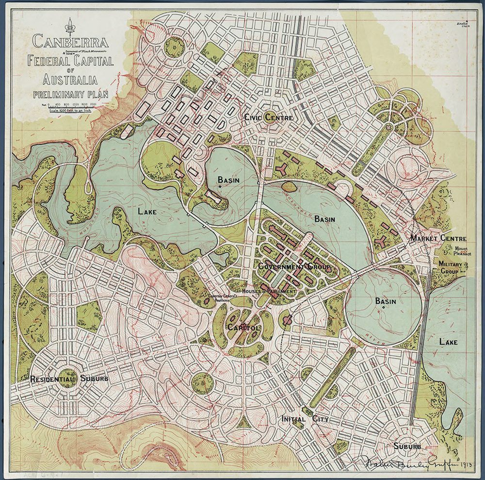

TourArchitectural Bus Tour: Griffith Plans
Explore Griffin's Canberra through a guided bus tour and exclusive cultural experiences, including rare archival displays and insights into the original city plans, celebrating Walter Burley Griffin's 150th anniversary.
Register Now